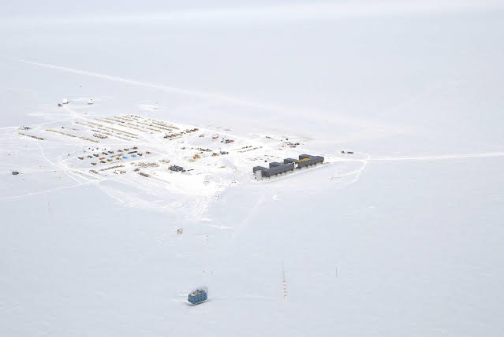
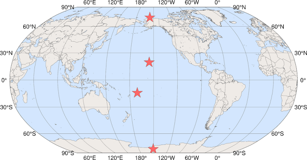
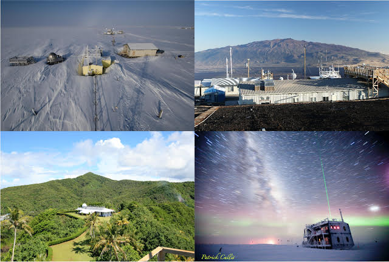
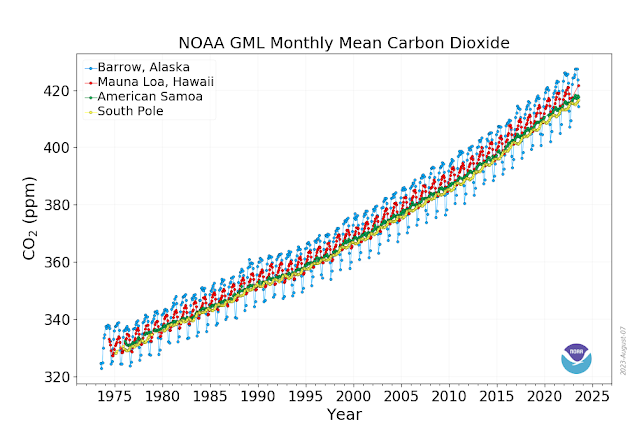
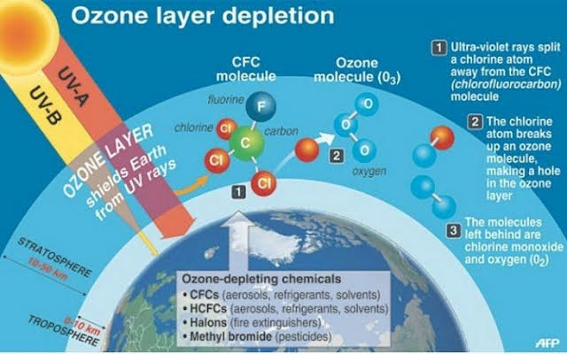
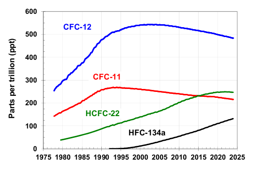
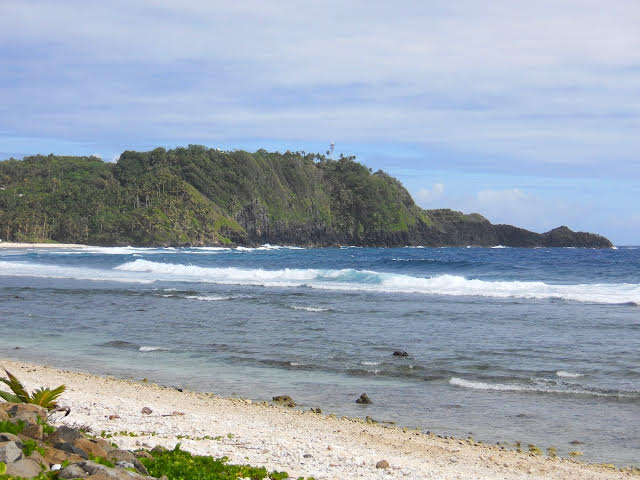

Longren Colorado Newsletter #00 - 17.11.2024 ------------------------------ Hello friends and family, In the last letter, I mentioned briefly a new job I have based out of Colorado. Here, I'd like to geek out and tell you all about what I am doing now for work. At the South Pole, there are four main science projects that each send a pair of technicians to take year-long stints of work there. Of these projects, three are telescopes: the South Pole Telescope, the BICEP Array, and the IceCube Neutrino Observatory. The fourth project focuses on atmospheric research, run by the National Oceanic and Atmospheric Administration (NOAA). Lastly, there are two general technicians, or research associates, that support many projects. That amounts to ten science-types who remain at the station over the winter, which is about a quarter of the total winterover population.  The Atmospheric Research Observatory (ARO) at the South Pole is the smaller blue building. The path leading off to the right leads to the telescopes. (A. V. Williams) As for me, I've been fortunate enough to get a job as one of NOAA's technicians in their Global Monitoring Laboratory (GML). While as a whole GML has about 120 people working towards the goal of "taking the pulse of the planet", I work as part of a small team of technicians in the Observatories and Operations (OBOP) division. Together, we keep each of NOAA's four Atmospheric Baseline Observatories (ABOs) running and collecting quality data. I know those were a lot of acronyms, but can you expect anything less? This is a government job, afterall. I'll be based in Boulder, Colorado for the next year, where I'll support all four ABOs remotely. Then, I'll head to the South Pole in Oct. 2025, where I will stay for about 13 months.  ------  From north to south, the ABOs are located at: Barrow, Alaska; Mauna Loa, Hawaii; American Samoa; South Pole, Antarctica. (NOAA) Each of these locations is in a remote location, away from both human-made and natural pollutants. That allows the air samples to be made on some of the cleanest air in the world. Plus, a wide range of latitudes is covered by the stations, from the most northern point in Alaska to the farthest south point on Earth. Together, the clean air and large coverage of the Earth provides a quality baseline reading of the Earth's atmosphere. A reading of what then, exactly? Air is just air, right? Well, not exactly. While most of the air in the atmosphere is nitrogen and oxygen, there is a small percentage of other gases. Even small changes in those gases can have a huge impact on the Earth. One example of how a change in the composition of the atmosphere can have an impact is in the climate. Two big players in the warming of the atmosphere are carbon dioxide and methane, among others. Gases such as these trap heat inside the atmosphere, making the planet warmer. NOAA is one of many organizations across the globe who continuously monitor the changing atmosphere of the Earth.  A graph of CO2 in the atmosphere over time, showing the increase has been speeding up. (NOAA) The Earth's climate is observed to be changing, with no signs of slowing down. That's not good. However, I don't want to end this newsletter on a such a depressing note. Instead, I'll end with a success story about how we humans have made necessary change when it was needed. I want to tell you about ozone (O3) and how we protected it from nasty, human-made substances. Ozone in the upper atmosphere, specifically the stratosphere, is important. It acts as a shield against UV light that is harmful to many living things, including ourselves. Normally, ozone is prevalent in the stratosphere and naturally acts as this shield. However, the 1900s saw the invention of modern-day air conditioning and refrigerators. In order to function, these types of cooling units used chlorofluorocarbons (CFCs) as refrigerants. CFCs have also been used for other applications, such as aerosol sprays and a foaming agent in building insulation.  The ozone depletion mechanism illustrated. (AFP) The key thing here is that this CFC substance became mass-produced, which is bad because of the "chloro" part of their name, meaning it contains chlorine. When the CFCs are emitted and mix into the atmosphere, they will eventually reach the stratosphere - right where the ozone is. Then, disaster happens: UV sun rays break the chlorine off of the CFC, which itself then destroys the ozone. To prevent more CFCs from being produced, 27 global nations signed the Montreal Protocol in 1987, which included restrictions on the creation of CFCs, until they were later banned altogether. Substitutes became used instead, such as a slightly better stopgap, called until the eventual replacements with no chlorine, called hydrofluorocarbons (HFCs), were created.  A graph of ozone-depleting substances over time, showing a decline in harmful CFCs and trends in their replacements, HCFCs and HFCs. (NOAA) The response to the rise in ozone-depleting substances is a great success story on how we humans have responded to our changing planet. Let's see if we can make a similar, collective response to the rising level of greenhouse gases in our atmosphere. I'll leave you with an update on my whereabouts: I am currently in American Samoa filling in for the Station Chief while he goes on vacation for a couple weeks. I've had a great time here, conducting balloon launches, taking air samples, and keeping the instrumentation running.  A distant view of the American Samoa observatory. More on that in the next one. Thanks for reading, Luke ------------------------------ ------------------------------ Previous newsletters can be found on my website. |